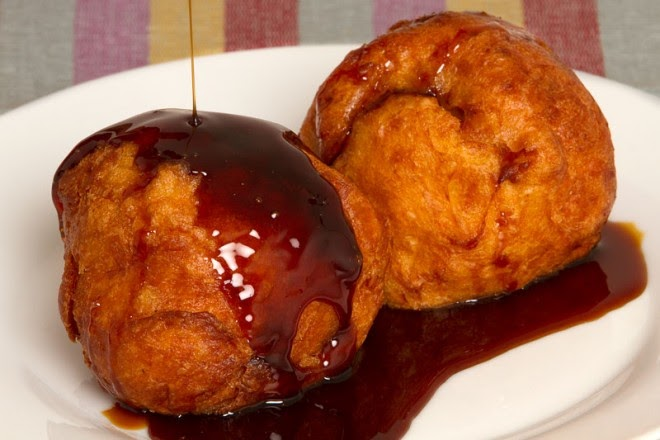

Cocinando
El blog para los amantes de la gastronomía típica Salvadoreña
Favoritos:
Historial:
- Rihuas
- Pastelitos
- Yuca Frita
Pupusas Revueltas
18 Febrero 2019

Las pupusas son tortillas hechas de masa de maíz o de arroz rellenas con queso, chicharrón (extracción de la carne de cerdo), frijoles y a las que llamamos “revueltas” (chicharrón con frijoles y queso), camarón y pescado, entre otras opciones.
Se comen con curtido de repollo y hay quienes las prefieren con salsa de tomate natural.
Las más comunes son las que se hacen con masa de maíz. Las de arroz se comen generalmente en las afueras de la ciudad capital San Salvador.
Cabe destacar que por Decreto Legislativo cada segundo domingo de noviembre se celebra el Día Nacional de las Pupusas.
Dejanos tus comentarios
Nuegados con chilate
16 Febrero 2019
Los nuégados son un platillo dulce típico muy delicioso de El Salvador, y debido a su sabor dulce, usualmente se les degusta en compañía del muy típico y popular chilate (una bebida típica de maíz blanco con sabor simple) pero también pueden ser una deliciosa merienda o postre por sí solos.
La receta para preparar nuégados representa sin duda alguna una fusión de culturas culinarias, en las cuales se mezclan la cocina española y la cocina indígena pipil. Históricamente ambas culturas aportaron una parte importante en la elaboración de este rico postre que hoy en día tenemos la posibilidad de disfrutar.